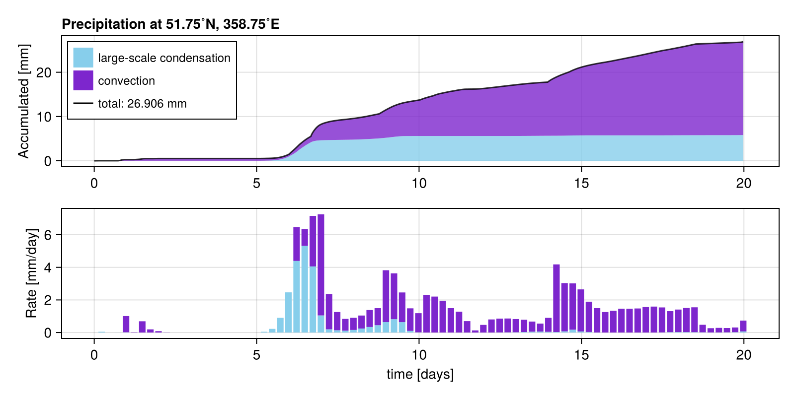
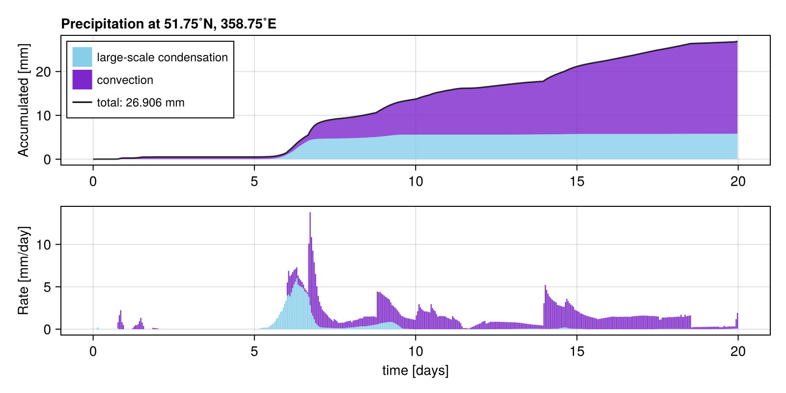

RainGauge
RainMaker.jl exports the callback RainGauge, a rain gauge that you can place inside a SpeedyWeather simulation to measures precipitation at a given location. The following explains how to use this RainGauge callback.
With a SpectralGrid from SpeedyWeather.jl (see here) you can create RainGauge (it needs to know the spectral grid to interpolate from gridded fields to a given location). In most cases you will probably want to specify the rain gauge's location with lond (0...360˚E) and latd (-90...90˚N)`
using SpeedyWeather, RainMaker
spectral_grid = SpectralGrid() # default resolution
rain_gauge = RainGauge(spectral_grid, lond=358.75, latd=51.75)RainGauge{Float32, AnvilInterpolator{Float32, OctahedralGaussianGrid}} <: AbstractCallback
├ latd::Float64 = 51.75˚N
├ lond::Float64 = 358.75˚E
├ measurement_counter:Int = 0 (uninitialized)
├ tstart::DateTime = 2000-01-01T00:00:00
├ Δt::Second 1800 seconds
├ max_measurements::Int = 100000 (measuring for up to ~5.7 years, 0% recorded)
├ accumulated_rain_large_scale::Vector{Float32}, maximum: 0.0 mm
├ accumulated_rain_convection::Vector{Float32}, maximum: 0.0 mm
└ accumulated total precipitation: 0.000 mm(also see ?RainGauge for more information). The measurement_counter starts at 0 and just counts up the number of measurements the rain gauge has made, one per timestep – zero also means that the gauge is not initialized. In order to reconstruct the time axis the fields tstart and Δt are used but they will be automatically set when initialized given the time step in the model. At any time you can always reset!(rain_gauge) in order to reset the counter, time and all rainfall measurements. But a RainGauge is also mutable, meaning you can do this by hand too, e.g. rain_gauge.accumulated_rain_large_scale .= 0.
RainGauge has two vectors accumulated_rain_large_scale and accumulated_rain_convection where every entry is one measurement of the given precipitation type at the specified location. One measurement is taken after every time step of the model simulation. In order to preallocate these vectors we use max_measurements as length, meaning those are the maximum number of measurements that will be taken. An info is thrown when this point is reached and also an instance of RainGauge printed to the terminal shows you how many years of measurements you can take and how much of that measurement "memory" is already used, see above. If you want to measure for longer periods you may need to increase max_measurements by setting it as a keyword argument, e.g. RainGauge(spectral_grid, max_measurements=1_000_000)
Adding RainGauge as callback
The RainGauge is implemented as a <: SpeedyWeather.AbstractCallback so that it can be added to a model with add!
model = PrimitiveWetModel(;spectral_grid)
add!(model, rain_gauge)[ Info: RainGauge{Float32, AnvilInterpolator{Float32, OctahedralGaussianGrid}} callback added with key callback_g3WkNote that you can create many different (or same) RainGauges and add them all to your model in the same way. This way you can place several "weather stations" across the globe and measure simultaneously. Note that you will need to create several independent RainGauges for that, adding the same RainGauge several times to the model is unlikely what you will want to do (it will measure several times the same precipitation after each time step).
Continuous measurements across simulations
While you can reset!(::RainGauge) your rain gauge manually every time, this will not happen automatically for a new simulation if the rain gauge has already measured. This is so that you can run one simulation, look at the rain gauge measurements and then continue the simulation. Let's try this by running two 10-day simulations.
simulation = initialize!(model)
run!(simulation, period=Day(10))
rain_gaugeRainGauge{Float32, AnvilInterpolator{Float32, OctahedralGaussianGrid}} <: AbstractCallback
├ latd::Float64 = 51.75˚N
├ lond::Float64 = 358.75˚E
├ measurement_counter:Int = 480 (now: 2000-01-11 00:00:00)
├ tstart::DateTime = 2000-01-01T00:00:00
├ Δt::Second 1800 seconds
├ max_measurements::Int = 100000 (measuring for up to ~5.7 years, 0% recorded)
├ accumulated_rain_large_scale::Vector{Float32}, maximum: 5.5958014 mm
├ accumulated_rain_convection::Vector{Float32}, maximum: 8.095171 mm
└ accumulated total precipitation: 13.691 mmYay, the rain gauge has measured precipitation, now let us continue
run!(simulation, period=Day(10))
rain_gaugeRainGauge{Float32, AnvilInterpolator{Float32, OctahedralGaussianGrid}} <: AbstractCallback
├ latd::Float64 = 51.75˚N
├ lond::Float64 = 358.75˚E
├ measurement_counter:Int = 960 (now: 2000-01-21 00:00:00)
├ tstart::DateTime = 2000-01-01T00:00:00
├ Δt::Second 1800 seconds
├ max_measurements::Int = 100000 (measuring for up to ~5.7 years, 1% recorded)
├ accumulated_rain_large_scale::Vector{Float32}, maximum: 5.809688 mm
├ accumulated_rain_convection::Vector{Float32}, maximum: 21.096441 mm
└ accumulated total precipitation: 26.906 mmwhich adds another 10 days of measurements as if we had simulated directly 20 days.
Visualising RainGauge measurements
While you always see a summary of a RainGauge printed to the REPL, we can also visualise all measurements nicely with Makie.jl. Because RainMaker.jl has this package as a dependency (particulary the CairoMakie backend) the only thing to do is calling the RainMaker.plot function. We do not export plot as it easily conflicts with other packages exporting a plot function.
RainMaker.plot(rain_gauge)
The RainMaker.plot functions takes as optional keyword argument rate_Δt::Period so that you can change the binwidth of the precipitation rate. Above we have one bin every 6 hours (the default), showing the average rate over the previous 6 hours. You can visualise the hourly precipitation rate with
RainMaker.plot(rain_gauge, rate_Δt=Hour(1))
which just gives you a more fine-grained picture. Arguments can be Hour(::Real), Minute(::Real), Day(::Real) but note that the default model time step at default resolution is 30min, so you do not get any more information when going lower than that.
Functions and types
RainMaker.RainGaugeRainMaker.plotRainMaker.reset!RainMaker.reset!SpeedyWeather.callback!SpeedyWeather.initialize!
RainMaker.RainGauge — TypeMeasures convective and large-scale precipitation across time at one given location with linear interpolation from model grids onto lond, latd. Fields are
lond::Float64: [OPTION] Longitude [0 to 360˚E] where to measure precipitation.latd::Float64: [OPTION] Latitude [-90˚ to 90˚N] where to measure precipitation.interpolator::Any: [OPTION] To interpolate precipitation fields onto lond, latd.max_measurements::Int64: [OPTION] Maximum number of time steps used to allocate memory.measurement_counter::Int64: [OPTION] Measurement counter (one per time step), starting at 0 for uninitialized.tstart::DateTime: Start time of gauge.Δt::Second: Spacing between time steps.accumulated_rain_large_scale::Vector: Accumulated large-scale precipitation [mm].accumulated_rain_convection::Vector: Accumulated convective precipitation [mm].
RainMaker.plot — Methodplot(gauge::RainGauge; rate_Δt) -> Makie.Figure
Plot accumulated precipitation and precipitation rate across time for gauge::RainGauge from RainMaker.jl. rate_Δt specifies the interval used to bin the precipitation rate, while units are always converted to mm/day. Default is 6 hours.
RainMaker.reset! — Methodreset!(
gauge::RainGauge,
progn::PrognosticVariables,
diagn::DiagnosticVariables,
model::AbstractModel
)
Reset gauge::RainGauge to its initial state, but use time and Δt from clock.
RainMaker.reset! — Methodreset!(gauge::RainGauge) -> RainGauge
Reset gauge::RainGauge to its initial state, i.e. set measurement_counter to 0, tstart to DEFAULT_DATE, Δt to DEFAULT_ΔT, and set accumulated precipitation vector to zeros.
SpeedyWeather.callback! — Methodcallback!(
gauge::RainGauge,
progn::PrognosticVariables,
diagn::DiagnosticVariables,
model::AbstractModel
)
Callback definition for gauge::RainGauge from RainMaker.jl. Interpolates large-scale and convective precipitation to the gauge's storage vectors and converts units from m to mm. Stops measuring if the max_measurements are reached which is printed only once as info.
SpeedyWeather.initialize! — Methodinitialize!(
gauge::RainGauge,
args...
) -> Union{Nothing, RainGauge}
Initialize gauge::RainGauge by calling reset!(::RainGauge) but only if gauge is not already initialized (gauge.measurement_counter > 0), so that it can be re-used across several simulation runs.